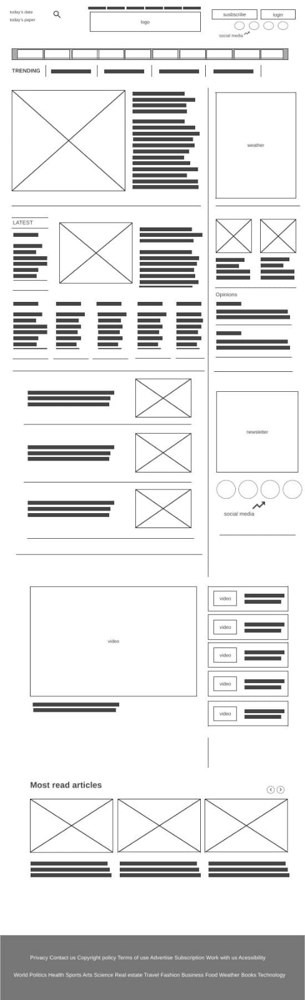
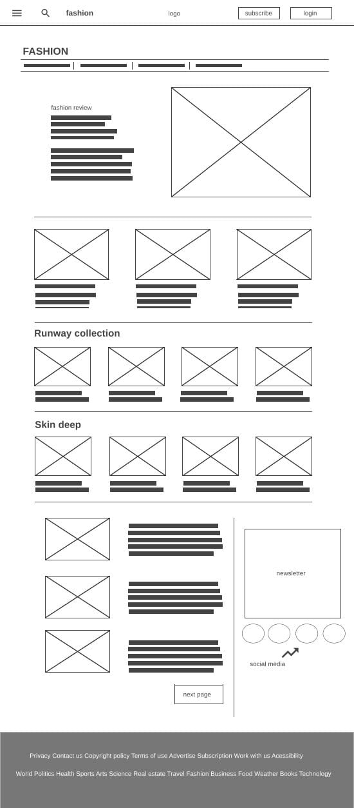
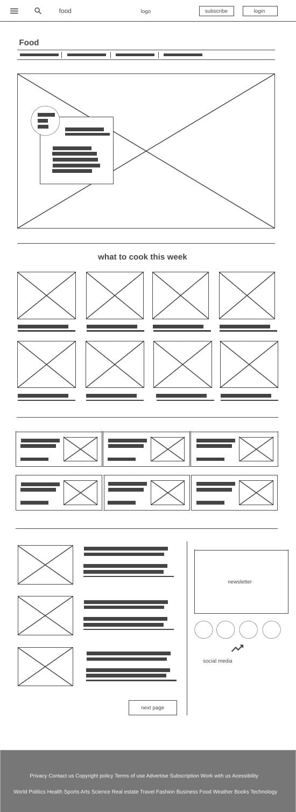
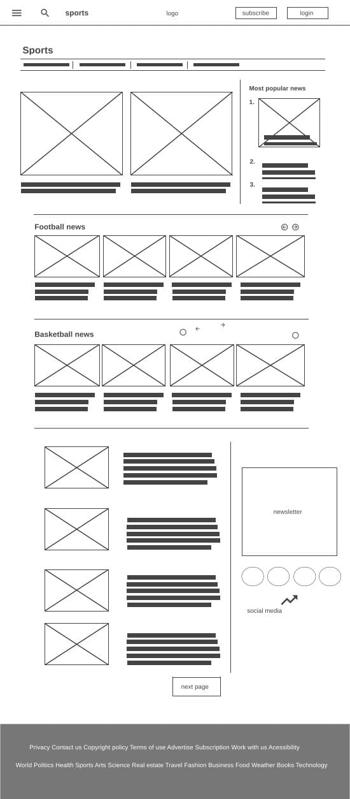
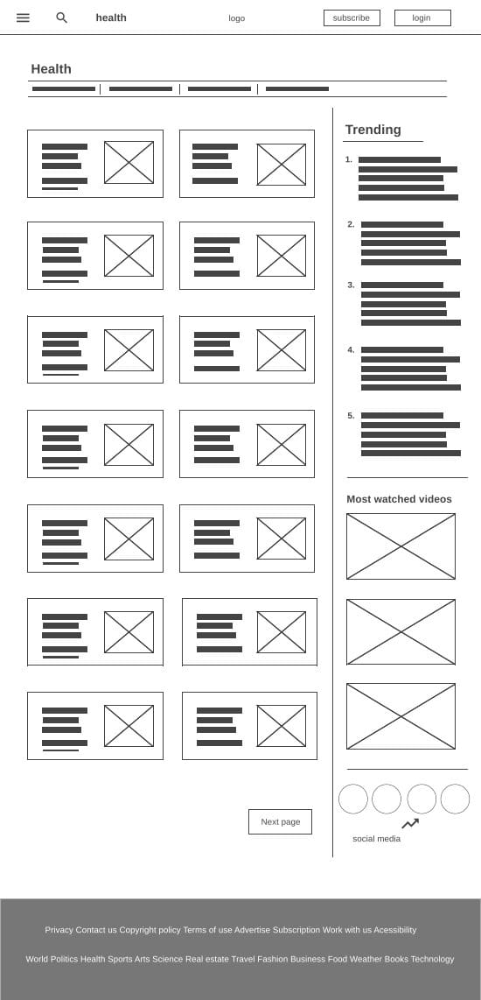

Nancy Rashed
Introduction:
I wanted a website that contains a lot of different news to satisfy a majority of people so I choose to make a newspaper magazine that
contains different topics and pages that attracts most of the people. The website contains 5 pages the first one is the main page which
contain different news and isn’t just one topic it has some of the important things that you would need when you use a news magazine. The
other 4 pages has 4 different topics which are sports, food, fashion and health. I choose those topics because they are what people search for
the most and want to get daily information about them and also tried to have different topics because not everyone think the same and love the
same thing. So the website contains videos and photos to make it less boring and give you the whole idea.
Inspiration:
What was behind my inspiration of creating a news magazine was wanting to provide people with most of the daily information they want to
know in their day and share it with them in an easy way. Because I have been in a situation where I couldn’t reach the information I want
from news magazines in an easy and fast way which annoyed me because when you search for information that means you want to find it as fast
as possible and not waste time as it might be really important. The websites that inspired when I was creating my website were CNN, Reuters,
Bloomberg, The globe and mail, The walt street journal and lastly New York times. I didn’t want to only get inspired by a website or two I
wanted to get inspired by as many as possible of the most popular news magazines because they are popular for a reason and I wanted to get to
know the reasons to do it in my own website. To provide a website that contains different design in each page as most of those websites had
the same design for all the pages which I didn’t find that interesting.
Accessibility:
The website has alt tags on images which make it accessible for people who are using screen readers or if the image can’t load or get
displayed for them so in those cases it specifies what is the image. The website has a relaxing and light font to the eyes to make your eyes
feel comfortable reading the news and not get tired as you would take some time to read. It contains bold headers to make it easier to
differentiate between the news and not get things mixed up. The colors of the website are simple and calm to make the user not feel like
there is a lot of colors attacking his eyes and causing him distribution while reading.
Usability:
The website has a search bar to make it easier for the user to reach the information they need in the shortest time possible and make the
process of finding something easy for them. There is a help menu at the bottom of the page and a bar list menu in the main page while in the
other pages there is a three line menu that contains the same things in the bar list menu and also they have the same help menu in the bottom
of all of the pages to make it easier to reach a specific part of the website that contains a specific topic and navigate easily between
them. The website is responsive which mean it is usable for many devices as laptops, tablets, ipads and mobiles. Which makes it accessible
and user friendly for a wide range of people.
Learning:
I had to learn how to insert a video in a website but it was really easy after I searched for it. I had to learn how to make a video gallery
which was really challenging I learned this from a YouTube video that was smooth and explained it in a good way. I had to learn how to make
an image slider which was also challenging but I learned it from a YouTube video and understood every part of it which made it easier. I also
had to learn how to use bootstrap to help make my website responsive and at first I got the idea wrong so I had to redo a lot of things in
the html and css until I got the hang of it and found how easy it was. Lastly I learned how to use media screen as it was confusing to me
before.
Evaluation I:
I think one of the things that worked for me the most was my website design as I made a wireframe for my website and started creating every
part of it using html, CSS and JavaScript and got it to look in the way I wanted it to look in the first place with developing some parts as
I was working on it. I was really happy with the image slider and video gallery as I think it was a smart idea to add them to make the
website has different types of things and ways to show the information provided. Also I like that when you hover over a title or a paragraph
or even some buttons it shows different colors that helps you differentiate between what you are hovering over and whether it is a title or a
paragraph which makes it a better experience for the user.
Evaluation II:
I think I should have used more media screen or even made the whole website using it as it would have made the responsive part look way
better but I couldn’t use it for the whole pages as I am still not too good at using it so I didn’t want to risk it. I would have wanted to
use more JavaScript in my code and make the website interact with the DOM but unfortunately, I didn’t do much of this as I couldn’t find many
things that needs JavaScript to work in my design. Also I wanted to make the next page button turn into the next page of articles with the
same design but different 3 more news in the more news part but I couldn’t do that as I think it would have been counted as a whole page.
Resources:
F. Pop, 'CodePen Home Newsletter Design - #068 of #100Days100Projects', [source code].
https://codepen.io/FlorinPop17/pen/XWWQLxv
Mr. Web Designer, 'How To Make A Responsive Video Playlist Using HTML CSS & JavaScript', [source code], 2022.
https://www.youtube.com/watch?v=w37MUs50xSQ&t=79s
Web Dev Tutorials, ' HTML, CSS & JavaScript - How to Create a Multi Item Image Carousel (w/ Tiny Slider) - BUTTON VERSION', (source code), 2022. [source code].
https://www.youtube.com/watch?v=fNx_ELbe1Vc
Developer Filip,' 6 JavaScript examples to make your websites more ENGAGING!', 2021.[source code].
https://www.youtube.com/watch?v=MCRV9ajSfoc
note: all the articles and pictures used were not mine they are from the pages i got inspired from which are:
CNN
Reuters
Bloomberg
The globe and mail
The walt street journal
NewYork times
Appendices:
Wireframe of the pages
1. Main page wireframe:

2. wireframe of fashion page:

3. wireframe of food page:

4. wireframe of sports page:

5. wireframe of health page:
